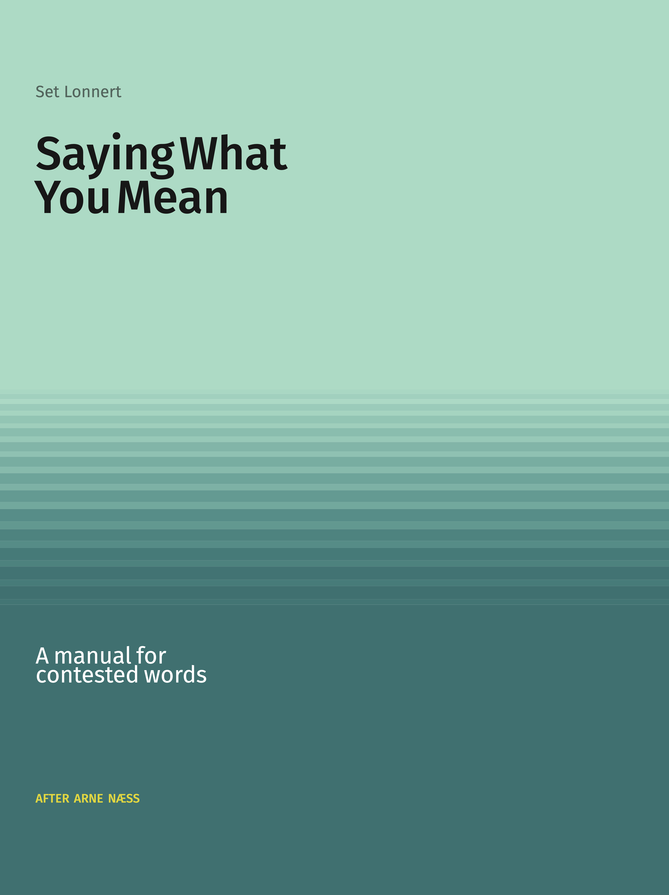
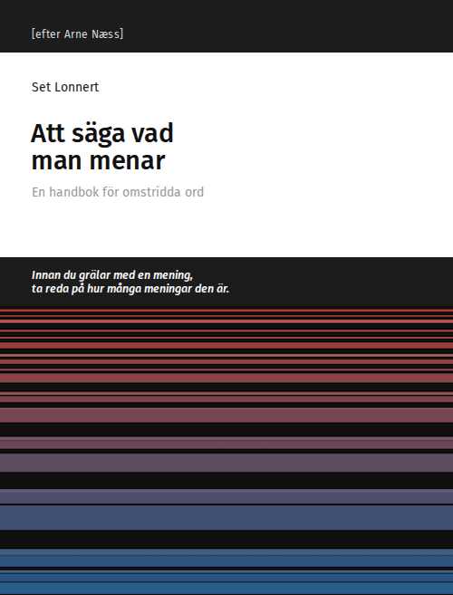

A Manual for Contested Words • Set Lonnert • Books on Demand • 2026
Before you argue with a sentence, find out how many sentences it is. A working manual for the moment a word stops being free and starts being a rule — in a policy, a statute, a platform's terms of service, an accusation.
The book exists in two languages: Saying What You Mean in English and Att säga vad man menar in Swedish. Each edition stands on its own and can be read without the other.
Arne Næss put the first version of this material in front of students as stencils in occupied Norway in 1941, and for a generation afterwards a form of it was what Norwegian undergraduates were taught before they were taught anything else. A Scandinavian discipline, then, written for an English-speaking world.
Att säga vad man menar brings it home again, to a Scandinavian language and to Swedish readers.

A manual for contested words. English edition.
Two people argue for two hours and get nowhere. Neither has lied and neither has misquoted. They were reading one sentence two different ways, and nothing in the argument was built to notice.
This is a working manual for the moment a word stops being free and starts being a rule — in a policy, a statute, a platform's terms of service, an accusation. It sets out seven steps for taking a contested sentence apart and nine for the argument it was a premise in; six norms for doing either in good faith, each printed with what it will cost the person who keeps it; five verdicts an argument can honestly end at; and four worked audits of live material, one of which produces nothing and is printed anyway. Seven exercises are answered in full.
This is not an edition of Næss's book, and nothing here rests on it: it is the same job done again, for a world where the rules are applied nine billion times in six months by machines.
It does not ask anyone to speak more precisely. Chapter 7 is the argument against that, and it names who pays.
Edition: 1
ISBN: 978-91-8150-115-5
Format: 170 × 220 mm
Pages: 180

En handbok för omstridda ord. Swedish edition.
Två personer grälar i två timmar och kommer ingenstans. Ingen av dem har ljugit och ingen har citerat fel. De läste en och samma mening på två olika sätt, och ingenting i diskussionen var byggt för att märka det.
Det här är en arbetshandbok för ögonblicket då ett ord slutar vara fritt och börjar bli en regel — i en policy, en lagtext, en plattforms användarvillkor, en anklagelse. Den visar hur en omstridd mening tas isär och hur argumentet den ingick i prövas, vilka normer som gäller för att göra det i god tro och vad de kostar den som håller sig till dem, och vilka utfall en diskussion ärligt kan sluta i.
Arne Næss lade fram den första versionen av materialet som stenciler för studenter i det ockuperade Norge 1941. Det här är inte en utgåva av hans bok, utan samma arbete gjort på nytt — för en värld där reglerna tillämpas av maskiner, miljarder gånger om.
Den ber ingen att uttrycka sig mer exakt. Den visar i stället varför det kravet inte räcker, och vem som får betala för det.
Edition: 1
Language: Swedish
Format: 170 × 220 mm